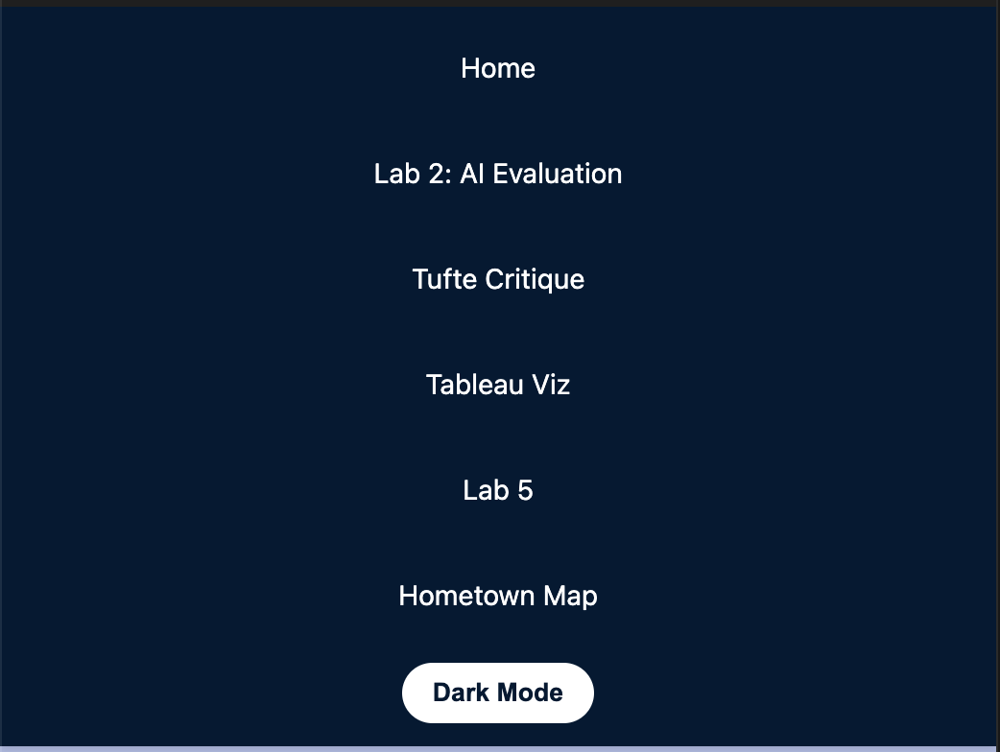

Experiment A: Portfolio Enhancement
Feature: Dark Mode Button
This feature allows users to toggle between light and dark themes for better accessibility and user experience.
How it works
- Clicking the dark mode button triggers a JavaScript function.
- The function toggles a data attribute on the HTML element.
- The CSS variables change based on the data attribute, updating the theme.
![[describe image]](images/darkmode.png)
Key Code Snippet (with Explanation)
[Optional title for snippet]
[Paste your code here]Experiment C: Debugging with AI
The entire time I have been working on my portfolio, the colors have been messed up from what I had been trying to accomplish.
What Was Happening
The area where my tabs were was a bright purple when I had attempted to make it a navy blue previously.
My Initial Hypothesis
I initially guessed that something must have been off in the styles.css and that the colors were not coded correctly.
What AI Helped Me Verify
The AI helped me verify that the issue was indeed with the CSS variables and not with the HTML structure or JavaScript functionality.
What I Learned
- I learned how to use AI tools to debug CSS issues effectively.

My Vibe Coding Guidelines
- Break down the problem in as much detail as possible and as specific as possible so that the AI understands the entirety of the issue.
- Test every change that is made in the browser.
- Create my own ideas and use AI to assist my ideas, instead of using it to come up with my ideas as well.
- Always look through the AI code before putting it in to double check that is correct and what I am asking.